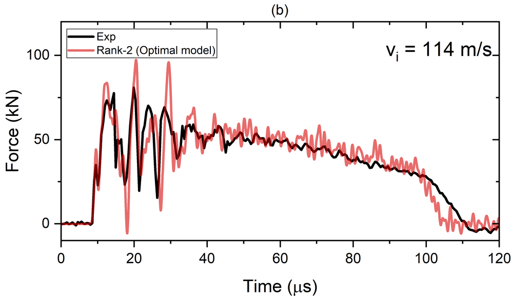
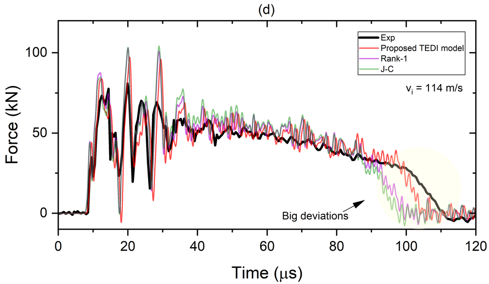

Every flow stress model, however it is built, is calibrated within an experimentally accessible domain. For split Hopkinson pressure bar (SHPB) testing, that domain tops out at roughly \(10^3\)–\(10^4\ \text{s}^{-1}\). Yet high-velocity impact, crash and perforation simulations routinely call that model at strain-rates far beyond it, where nobody has actually checked what it predicts. Paper 1 examined whether a flow stress equation's assumed decoupled structure is legitimate; Paper 2 and Paper 3 built data-driven, low-rank equations directly from qualified SHPB data for strain/strain-rate and strain/strain-rate/temperature respectively. Paper 4 asks a different question: once such a model is built, how can it be responsibly pushed beyond the SHPB domain, and how can that extrapolation actually be checked against something real? Its answer is TEDI-FS, a framework that decomposes the flow stress into a rank-2 tensor, extrapolates only the part of it that needs to change, constrains that extrapolation to stay consistent with the SHPB-calibrated behaviour it grew out of, and then identifies and verifies the extrapolated parameters against a purpose-built Taylor-Hopkinson impact test reaching strain-rates around \(10^5\ \text{s}^{-1}\).
Keywords: strain-rate effect; Taylor-Hopkinson test; non-negative CP tensor decomposition; inverse characterization of flow stress
1. The question this paper asks
A flow stress model built from SHPB data, however carefully it is derived, is only ever validated inside the SHPB envelope. Beyond it, an analyst has no way to know whether the predefined functional form still makes sense, whether its calibrated parameters extend gracefully, or whether it is simply the wrong shape for what is actually happening in the material. Directly extrapolating a predefined equation, Johnson-Cook or otherwise, carries all three risks at once, and there has traditionally been no independent, physical way to check the result at the strain-rates where it matters, well above \(10^4\ \text{s}^{-1}\).
Paper 4 confronts this directly: how can a flow stress model be validly extrapolated beyond its calibrated strain-rate domain, and how can that extrapolation be verified by experiment? Its proposed answer, the Tensor-Decomposition-based Extrapolation and Dynamic Identification of Flow Stress (TEDI-FS) framework, integrates tensor decomposition, latent-mode extrapolation, and consistency-constrained inverse calibration into one methodology, then checks the result against Taylor-Hopkinson impact experiments reaching strain-rates of roughly \(10^5\ \text{s}^{-1}\), about an order of magnitude beyond the SHPB tests used to calibrate the model in the first place.
2. The TEDI-FS framework
The starting point is the same kind of object used in Papers 2 and 3: a three-dimensional flow-stress tensor built from strain-, strain-rate-, and temperature-dependent data measured within the SHPB-accessible domain, here denoted \(\Omega_0\). Rather than an ANN-filled array followed by ordinary CP decomposition, TEDI-FS applies non-negative CP (NN-CP) decomposition, which constrains every extracted latent mode to stay non-negative, preserving physical interpretability (a flow-stress-related latent mode should not go negative) and, the paper finds, stability of the identified modes. As in Appendix A of the paper, a rank-3 decomposition was tried and rejected: the third component becomes increasingly ill-conditioned and difficult to identify uniquely, so only rank-2 is carried forward.
The rank-2 decomposition represents the flow-stress tensor \(\mathcal{S}\) as a sum of two rank-1 terms, each an outer product of a strain mode, a strain-rate mode and a temperature mode:
with scalar weights \(\sigma_0 = 325.4\) MPa and \(\sigma_0' = 47.9\) MPa fixed by normalising each mode at a reference state. The strain modes \(a_1, a_2\) are fitted with Ludwick-type hardening functions, directly from the extracted latent modes; the temperature modes \(c_1, c_2\) remain valid up to 823 K, the same upper temperature bound used in Paper 3's own dataset. The interesting behaviour sits in the two strain-rate modes.
3. Extrapolating one mode, holding the other fixed
Within \(\Omega_0\), the first strain-rate mode rises to a peak near 380 s-1 and then decreases, staying nearly flat as it approaches the upper strain-rate bound of the SHPB data (about 4700 s-1). Because it is already close to flat at that boundary, the paper simply holds the first mode fixed beyond \(\Omega_0\); there is little to be gained, and some risk to be avoided, in extrapolating a mode that has already saturated.
The second strain-rate mode is different: within \(\Omega_0\) it is fitted directly from the NN-CP results, but it is monotonically increasing and shows no sign of saturating, so it is the sole carrier of the extrapolation. To extend it into the expanded domain \(\Omega\) (beyond the SHPB range) while keeping a simple, physically admissible shape, the paper adopts a Cowper-Symonds-type relation as an extrapolation ansatz:
where \(D\) and \(q\) are the two of the three unknown parameters that TEDI-FS ultimately has to identify (the third, \(\sigma^*\), rescales the extrapolated second-mode contribution). Eq. (2) satisfies the same normalisation condition as the calibrated modes in the limit of vanishing strain-rate, so the extrapolated representation joins the SHPB-calibrated one smoothly at the boundary of \(\Omega_0\), by construction rather than by curve-matching after the fact.
4. A consistency constraint, then a two-stage inverse identification
Extrapolating one mode with two free parameters is easy; making sure the result does not quietly break the model's already-validated behaviour inside \(\Omega_0\) is the actual difficulty. The paper's first safeguard is a consistency error, comparing the extended representation's predictions against the original SHPB-calibrated flow-stress data over \(M\) sampling points within \(\Omega_0\):
Only parameter sets satisfying \(e_1 < e_{tol1}\) are admissible for the next step; the paper sets \(e_{tol1} = 10\%\), described as “a practical compromise” between admitting enough candidates and not degrading the model's fidelity inside its already-validated range. Discretising the physically admissible parameter ranges (\(\sigma^*\in[25,100]\) MPa, \(D\in[50,1000]\), \(q\in[1,5]\)) at five points each gives \(5^3 = 125\) candidate parameter sets, of which 47 pass the \(e_1<10\%\) screen.
The consistency constraint alone cannot pick a single best set, since many different \((\sigma^*, D, q)\) combinations can all stay within 10% inside \(\Omega_0\) while diverging wildly once extrapolated. That is what the Taylor-Hopkinson test, described next, is for: each of the 47 admissible candidates is run through a Taylor-Hopkinson finite-element simulation, and the predicted force-time history is compared against the experimental one at a reference impact velocity of 72.33 m/s, using an impulse-normalised error \(e_2\) evaluated over an active time window (the interval during which the experimental force exceeds 1% of its peak).
The identification proceeds in two stages. Stage-1 ranks all 47 admissible candidates by \(e_2\); the best, candidate Num #035, reaches \(e_2 = 0.1675\), with the second-best only 0.4% worse, and the ten lowest candidates clustered tightly between 0.1675 and 0.1906. Stage-2 then refines locally around the Stage-1 optimum with 93 further candidates; the best of these, Num #038, improves on the Stage-1 optimum by 3.9%. The pairwise profile landscapes of \(e_2\) (Figs. 16–17 in the paper) show a single connected low-error basin with no competing minima in either stage, indicating a well-identified optimum rather than a lucky point in a rough landscape. The final identified parameters are:
The resulting consistency error sits close to the prescribed 10% tolerance, which the paper flags explicitly as a trade-off: pushing \(e_1\) lower is possible, but it comes at the cost of degraded agreement with the Taylor-Hopkinson impact responses, since the two objectives, staying consistent with the SHPB domain and matching the impact response, are not perfectly aligned.
5. The Taylor-Hopkinson impact test
Verifying an extrapolated model this far beyond SHPB range needs a test that reaches strain-rates SHPB cannot. The paper's Taylor-Hopkinson configuration is exactly that: a standard Taylor impact test, but with the usual rigid anvil replaced by an instrumented transmitter bar, so the impact force can be reconstructed from the bar's own measured strain signal, the same measurement principle used in SHPB testing.
The specimen is the same C54400 phosphor bronze-copper alloy characterised in Paper 3, 9.5 mm in diameter at the impact end and 55 mm overall length; the transmitter bar is 20 mm diameter, 1000 mm long GCr15 high-strength steel (elastic modulus 206 GPa, density 7900 kg/m3, Poisson's ratio 0.3). Impact velocities were measured at 51.79, 53.03, 62.23, 72.33, 91.09, 94.92, 102.37 and 114.33 m/s, with repeated shots near 52 m/s and 93 m/s confirming repeatability. Strain gauges were placed 50 mm from the impact interface, outside the roughly 44 mm zone disturbed by wave reflections, following the dynamic Saint-Venant's principle established in earlier work by He, Ma, Karp and Li. A high-speed camera (Photron FASTCAM SA-Z, 210,000 fps) provided an independent, DIC-based strain-rate measurement, which peaked at approximately 12,400 s-1 at 23.8 μs into the 102.37 m/s shot, itself well beyond the 4700 s-1 SHPB calibration limit before the Taylor-Hopkinson data is even brought in.
On the simulation side, the specimen and transmitter bar were modelled in Abaqus/Explicit with the TEDI-FS flow-stress model implemented as a user-defined VUMAT subroutine, C3D8R elements, a 0.5 mm mesh near the impact interface coarsening to 2 mm along the rest of the bar, and kinematic surface-to-surface contact. A companion analysis in the paper's Appendix B confirms that the transmitter-bar mesh is not the source of any discrepancy discussed below: a mesh-sensitivity study shows a coarser mesh simply acts as a numerical low-pass filter, smoothing high-frequency content the way the finite gauge length does experimentally.
6. Validation, extrapolation, and a head-to-head comparison
With the parameters from Eq. (4) fixed, the paper runs the model in three directions: back inside the calibration velocity (72.33 m/s, used to fit the parameters, so this is not shown as an independent check), just below it, and well above it.
At 53.03 and 62.23 m/s, both below the 72.33 m/s calibration velocity, the model reproduces the experimental force-time histories with good agreement across the whole impact event (Fig. 18). At 102.37 and 114.33 m/s, both well above it, the paper reports the numerical predictions are in “very good agreement” with experiment, including the oscillatory trends, which it summarises as demonstrating “strong extrapolation performance” (Fig. 19):

A separate, independent check at the most extreme velocity (114.33 m/s) uses high-speed camera imaging rather than the transmitter-bar signal at all: the predicted residual length and residual velocity of the Taylor rod's free end both track the measured values closely (Fig. 20), the one caveat being an oscillation in the 20–30 μs window that the simulation resolves but the camera's frame rate cannot, a limitation of the measurement, not evidence against the model.
The sharper test is a head-to-head comparison against two conventional strategies built from the same underlying data: the classical Johnson-Cook (J-C) model, and the analytical CP rank-1 model derived directly from Paper 2/3-style rank-1 decomposition (the paper notes, citing its own earlier work, that J-C can be regarded as a special case of the rank-1 model). Both are single-regime formulations extrapolated beyond their own calibration domain the conventional way, directly. At low velocities they perform reasonably, but as impact velocity increases both show “pronounced discrepancies relative to experimental observations, including inaccurate peak force prediction and incorrect loading duration,” attributed to “the limited flexibility of single-regime constitutive formulations when extrapolated beyond their calibration domain.” At the most extreme velocity tested, the gap is unmistakable:

The paper's own framing is direct: TEDI-FS “provides a mathematically consistent representation of the experimentally observed response across a broader strain-rate range and achieves substantially improved agreements with both global and local experimental measurements,” while the conventional model's deviations from experiment grow as impact velocity increases, precisely where a direct extrapolation of a predefined, single-regime equation is least trustworthy.
7. Takeaway
Paper 4 does not propose a new way to fit SHPB data; it proposes a way to responsibly go beyond it. The rank-2 NN-CP decomposition splits the flow-stress tensor into a mode that is already saturated within the SHPB domain and a mode that is not; only the latter is extrapolated, using a simple Cowper-Symonds-type ansatz with two free parameters, under a hard consistency constraint that keeps the extrapolation from breaking what was already validated inside \(\Omega_0\). The genuinely new piece is the verification step: a Taylor-Hopkinson impact test built specifically to reach strain-rates the SHPB test cannot, used first to screen candidates by consistency and then to identify the final two parameters through a two-stage inverse calibration against measured force-time histories. The result, good agreement with impact responses up to roughly \(10^5\ \text{s}^{-1}\) and a clear advantage over directly-extrapolated J-C and rank-1 baselines at the highest velocities tested, is evidence for a general point: a model's validity beyond its calibration domain is not something to assume from its functional form, it is something that has to be built into the extrapolation procedure and then checked against an experiment designed to reach that domain.
References
- Huang, X., & Li, Q. M. (2026). Tensor-decomposition-based inverse characterization of flow stress for very-high strain-rate impact. International Journal of Impact Engineering, 105863. https://doi.org/10.1016/j.ijimpeng.2026.105863
- Huang, X., & Li, Q. M. (2023). The legitimacy of decoupled dynamic flow stress equations and their representation based on discrete experimental data. International Journal of Impact Engineering, 173, 104453. https://doi.org/10.1016/j.ijimpeng.2022.104453
- Huang, X., & Li, Q. M. (2025). Determination of dynamic flow stress equation based on discrete experimental data: Part 1 — Methodology and the dependence of dynamic flow stress on strain-rate. International Journal of Impact Engineering, 206, 105403. https://doi.org/10.1016/j.ijimpeng.2025.105403
- Huang, X., & Li, Q. M. (2025). Determination of dynamic flow stress equation based on discrete experimental data: Part 2 — Dynamic flow stress depending on strain, strain-rate and temperature. International Journal of Impact Engineering, 206, 105432. https://doi.org/10.1016/j.ijimpeng.2025.105432
- Johnson, G. R., & Cook, W. H. (1983). A constitutive model and data for metals subjected to large strains, high strain rates and high temperatures. In Proceedings of the 7th International Symposium on Ballistics, The Netherlands.
- Ludwik, P. (1909). Elemente der technologischen Mechanik. Springer.
- Cowper, G. R., & Symonds, P. S. (1957). Strain-hardening and strain-rate effects in the impact loading of cantilever beams.
- He, L., Ma, G. W., Karp, B., & Li, Q. M. (2014). Investigation of dynamic Saint-Venant's principle in a cylindrical waveguide – Analytical results. International Journal of Impact Engineering, 73, 135–144.
For the tensor-decomposition mathematics behind Section 2, see the non-negative CP decomposition note; for the two- and three-variable, SHPB-only versions of the same low-rank idea, see the reading guides to Paper 2 and Paper 3.